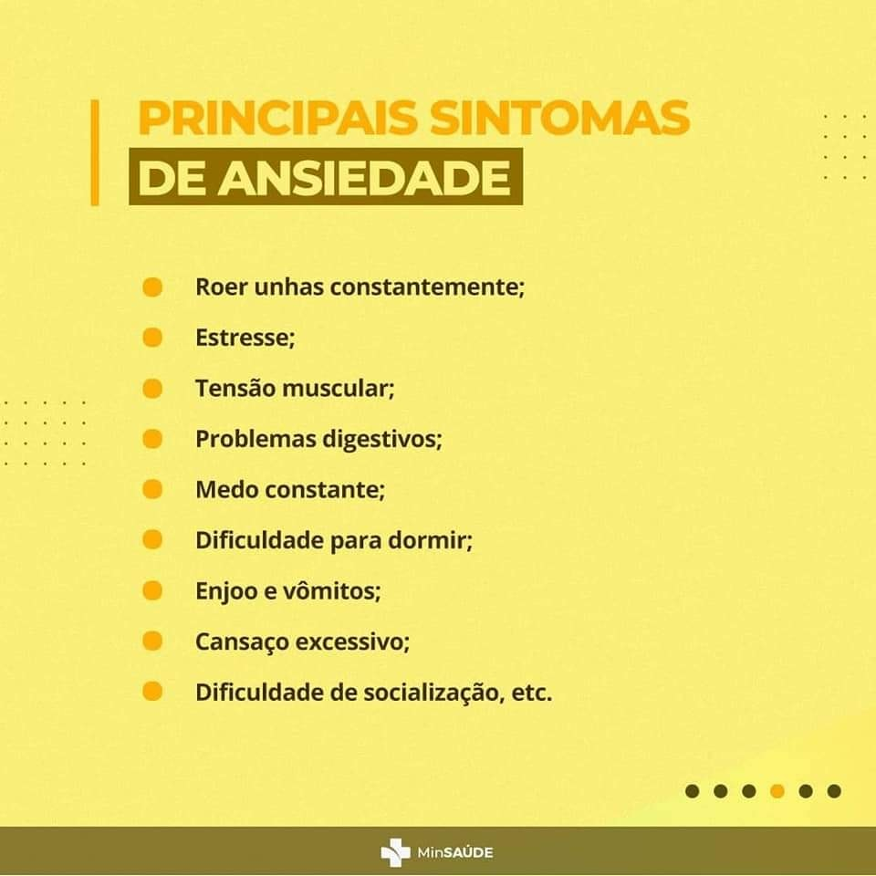
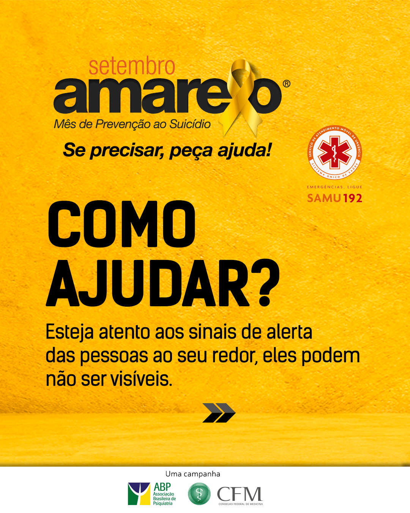

Setembro Amarelo é uma campanha que busca conscientizar a população sobre a prevenção do suicídio. O objetivo é promover a valorização da vida e oferecer suporte a pessoas em momentos difíceis.
Identificar sintomas como tristeza profunda, isolamento e falta de interesse é crucial. A campanha busca encorajar o diálogo sobre saúde mental.
Esteja presente para aqueles que precisam. Ouvir e apoiar pode fazer uma grande diferença na vida de alguém.
